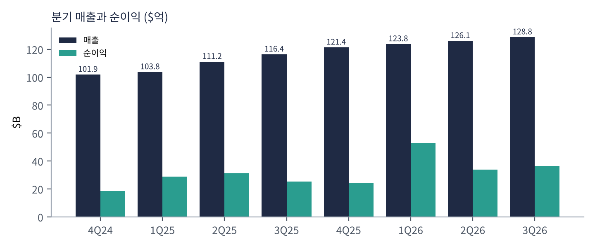
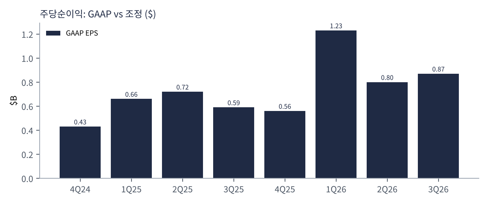
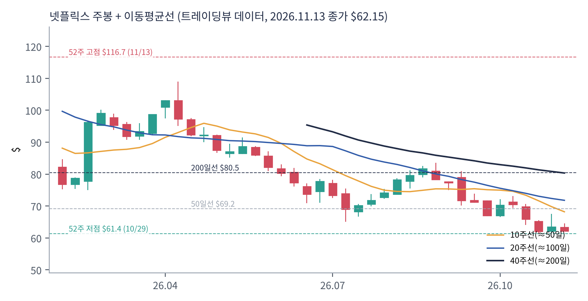
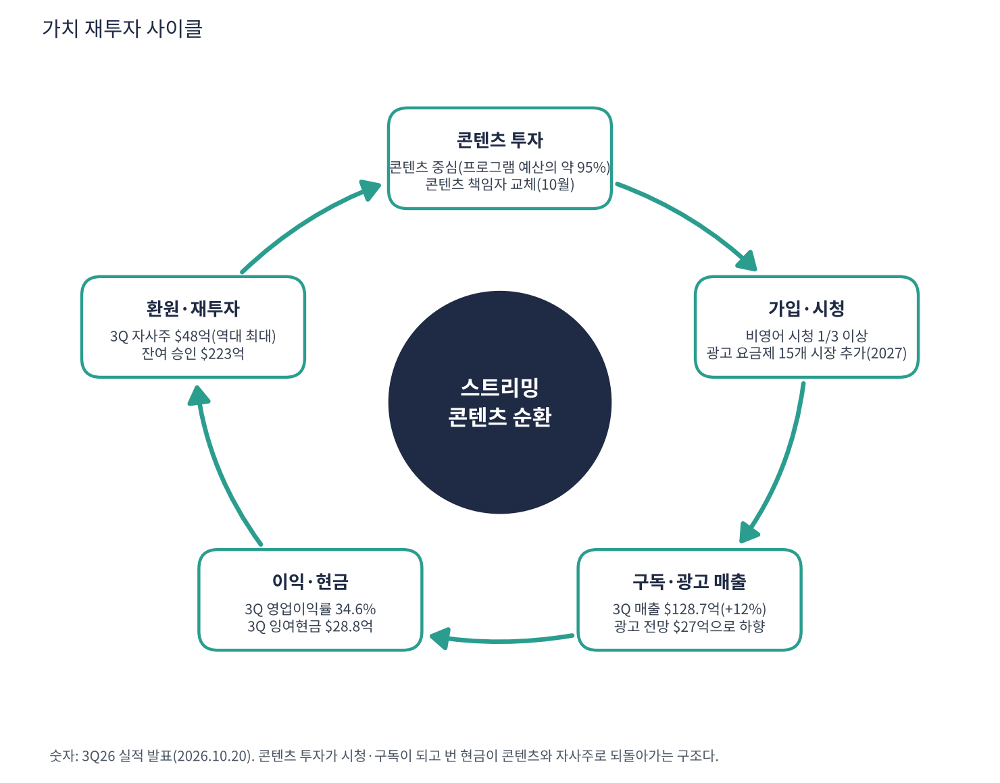

넷플릭스는 영화·시리즈·라이브를 구독과 광고로 파는 세계 최대 스트리밍 회사다. 이익은 늘지만 매출 성장이 3년 만에 가장 느려졌고, 1분기 EPS에 일회성 위약금이 들어 PEG가 좋아 보이는 회사다.
| 항목 | 내용 |
|---|---|
| 종목 | Netflix (NFLX) · NASDAQ · 스트리밍 · 캘리포니아 로스가토스 |
| 멀티플 | PER 18.0배(TTM, 일회성 포함) · P/S 5.26배 (11/13 종가 $62.15) |
| 최근 분기(3Q26) | 매출 $128.7억(+12%), 순이익 $36.6억, EPS $0.87, 영업이익률 34.6% |
| 2026 가이던스 | 매출 약 $511억(+13%), 영업이익률 31.5%, 잉여현금 약 $120억 |
| 현금·부채 | 스캐너: 현금 $82.3억, 총차입금 $173.8억, TTM 잉여현금 $113.8억 |
| 직책 | 인물 | 역할·특징 |
|---|---|---|
| 공동 CEO | 테드 사란도스·그레그 피터스 | 콘텐츠 전략과 사업을 나눠 이끎. 사란도스는 '핵심 콘텐츠가 성장의 엔진'이라고 설명 |
| 콘텐츠 책임자 | 피터 라이스(10/26 취임) | 벨라 바자리아 후임. 영화 부문 책임자도 교체됨 |
경영 스타일: '콘텐츠 슬레이트를 다시 정비하고 광고·라이브·게임으로 수익원을 넓힌다'. 10월에 인력 약 6%(약 1,000명)를 줄이고 콘텐츠 조직을 개편했으며, 라이선싱·제3자 콘텐츠 확대(프랑스 TF1 제휴)도 병행한다. 리드 헤이스팅스는 6월 이사회에서 물러난 것으로 보도됐다.
광고 요금제와 광고 기술, 라이브 이벤트 중계를 자체 플랫폼에서 운영한다.
비영어 콘텐츠가 전체 시청의 1/3 이상이 되었고, 광고 지원 요금제를 2027년 15개 시장에 추가한다.
다음 실적발표(4Q26)는 세 가지 질문에 답하는 자리다.
질문 1. 성장이 둔화된 채 가이던스를 지키는가?
| 확인할 숫자 | 좋아지면 | 나빠지면 |
|---|---|---|
| 4Q 매출 약 $134.4억(+12%), 영업이익률 26%, EPS 약 $0.67 | 가이던스 이상이면 ②가입·시청 고리가 유지된다 | 미달이면 시청시간 성장 우려가 커진다 |
질문 2. 광고 매출이 하향된 전망($27억)을 달성하는가?
| 확인할 숫자 | 좋아지면 | 나빠지면 |
|---|---|---|
| 2026 광고 전망 $27억(기존 약 $30억) | 달성하면 ③매출 고리의 보완축이 확인된다 | 추가 하향이면 구독 가격 의존이 커진다 |
질문 3. 2027 가이던스가 어떻게 나오는가?
| 확인할 숫자 | 좋아지면 | 나빠지면 |
|---|---|---|
| 2027 가이던스는 1월 발표 예정, 인력 감축 효과 약 120bp(4Q 마진 부담) | 마진 유지·개선이면 ④이익 고리가 견고하다 | 마진 하향이면 이익 고리가 약해진다 |
한 줄 판정 규칙: 첫 질문이 가이던스 안이면 약한 고리(성장 둔화)가 완화되고, 2027 가이던스가 마진을 낮추면 이익 고리가 약해진다.
일정: 2027-01-26 예정(트레이딩뷰 일정, 회사 확정 확인 필요). 2027 가이던스는 1월 발표라고 회사가 밝혔다.
| 분기 | 매출 | 순이익 | EPS | 조정 EPS | 특이 사항 |
|---|---|---|---|---|---|
| 4Q24 | $101.9억 | $18.7억 | 0.43 | – | |
| 1Q25 | $103.8억 | $28.9억 | 0.66 | – | |
| 2Q25 | $111.2억 | $31.2억 | 0.72 | – | |
| 3Q25 | $116.4억 | $25.5억 | 0.59 | – | |
| 4Q25 | $121.4억 | $24.2억 | 0.56 | – | |
| 1Q26 | $123.8억 | $52.8억 | 1.23 | – | 1Q26 WBD 인수 무산 위약금 $28억 반영(일회성) |
| 2Q26 | $126.1억 | $34.0억 | 0.80 | – | |
| 3Q26 | $128.8억 | $36.6억 | 0.87 | – | 3Q 매출 +12%, 비용 시점 영향으로 마진 상회 |


값은 트레이딩뷰 스캐너 분기 이력이다(10:1 주식분할 반영 EPS). 넷플릭스는 비GAAP EPS를 발표하지 않아 조정 EPS 열은 '–'다. 1Q26 순이익에는 워너브러더스 인수 무산에 따른 위약금 $28억(이자·기타수익)이 들어 있다. 분기 설비투자는 구하지 못했다.
흐름 요약: 매출이 4Q24 $102.0억에서 3Q26 $128.7억으로 늘었다. 1Q26 EPS $1.23은 일회성이고 영업 기준 EPS는 $0.56~0.87 범위다.
| 항목 | 값 | 비고 |
|---|---|---|
| 3Q 매출 | $128.7억(+12%) | 환율 중립 +11% |
| 2026 광고 매출 전망 | $27억 | 기존 약 $30억에서 하향 |
| 콘텐츠 비중 | 약 95% | 프로그램 예산 중 핵심 시리즈·영화(회사) |
| 비영어 시청 | 1/3 이상 | 10년 전 10% 미만 |
지역별·구독/광고 매출 표는 이번에 구하지 못했다. 성장은 가입 증가·가격 인상·광고가 끌지만 3분기 매출 성장은 3년 만에 가장 느렸다.
넷플릭스는 '콘텐츠로 시청 시간을 늘리고 구독·광고로 수익화하는 것'을 목표로 한다.
| 축 | 최근 움직임 |
|---|---|
| 콘텐츠 | 슬레이트 정비, 라이선싱·제3자 콘텐츠 확대 |
| 광고 | 광고 요금제 2027년 15개 시장 추가 |
| 환원 | 3Q 자사주 $48억, 잔여 승인 $223억 |

| 이동평균 | 값 | 종가 대비 | 해석 |
|---|---|---|---|
| 5일선 | $63.32 | -1.8% | 현재가가 아래 |
| 20일선 | $64.34 | -3.4% | 현재가가 아래 |
| 50일선 | $69.18 | -10.2% | 현재가가 아래 |
| 100일선 | $72.24 | -14.0% | 현재가가 아래 |
| 200일선 | $80.50 | -22.8% | 현재가가 아래 (-23%) |
주봉 흐름: 52주 고점 $116.73(11/13), 52주 저점 $61.39(10/29). 현재가 $62.15는 200일선 $80.50보다 아래, 50일선 $69.18보다 아래에 있다.
| 규칙 | 기준 | 현재 값 | 신호 |
|---|---|---|---|
| 장기 추세 필터 | 종가 vs 200일선 | $62.15 < $80.50 | 매도 |
| 중장기 교차 | 50일선 vs 200일선 | $69.18 < $80.50 | 매도 |
| 단기 교차 | 20일선 vs 50일선 | $64.34 < $69.18 | 매도 |
| 돈키언 채널 | 55일 고가 $83.60 / 저가 $61.39 | 중간값 $72.50 아래 | 매도 |
| 1개월 모멘텀 | 21거래일 수익률 | -14.4% (기준 $72.61) | 매도 |
| 3개월 모멘텀 | 63거래일 수익률 | -18.2% (기준 $76.02) | 매도 |
| 6개월 모멘텀 | 126거래일 수익률 | -28.6% (기준 $87.02) | 매도 |
| 12개월 모멘텀 | 252거래일 수익률 | -46.3% (기준 $115.75) | 매도 |
| 종합 (8개 평균) | -1.00 | 강한 매도 |
해석: 8개 신호 중 매수 0개, 매도 8개(점수 -1.00, 강한 매도)다. 14일 ATR $1.75 (2.8%).
| 가격·조건 | 무엇이 바뀌나 | 의미 |
|---|---|---|
| $80.50 돌파 | 200일선 | 매도 → 매수 |
| 50일선이 200일선 위로 | 50/200 교차 | 매도 → 매수 |
| 20일선이 50일선 위로 | 20/50 교차 | 매도 → 매수 |
| $72.50 돌파 | 돈키언 중간값 | 매도 → 매수 |
| $72.61 돌파 | 1개월 기준가 | 매도 → 매수 |
| 구분 | 가격대 | 근거 |
|---|---|---|
| 저항 1 | $63.32 | 5일선 |
| 저항 2 | $64.34 | 20일선 |
| 지지 1 | $61.39 | 55일 저점 |
| 지지 2 | $61.39 | 52주 저점 |
점수는 -1.00(강한 매도)다. 14일 ATR은 $1.75로 현재가의 2.8%다. 가까운 저항 $63.32을 종가로 넘는지와 가까운 지지 $61.39를 지키는지가 신호 전환의 기준이다. (내 가정, 매매 권유 아님)
| 악재 요인 | 내용 | 강도 |
|---|---|---|
| 성장 둔화 | 3Q 매출 성장 3년 만에 최저, 2026 매출 전망 +13%로 하향 | 높음 |
| 광고 | 2026 광고 전망 $27억(기존 약 $30억) | 중간 |
| 경영진 변화 | 콘텐츠 책임자·영화 부문 책임자 교체, 인력 6% 감축 | 중간 |
| 경쟁 | 아마존 프라임비디오·디즈니+·유튜브·틱톡과 시청시간 경쟁 | 중간 |
| 티커 | 회사 | PER(TTM) | PEG | P/S | EPS 성장(YoY) |
|---|---|---|---|---|---|
| NFLX | 넷플릭스 | 18.0배 | 0.41 | 5.26배 | +45% |
| DIS | 디즈니 | 24.5배 | – | 2.08배 | -24% |
| SPOT | 스포티파이 | 40.6배 | 0.29 | 5.71배 | +135% |
NFLX 첫 행 PEG 0.41·성장률 +45%는 스캐너 값(일회성 포함)이다. 위약금을 뺀 PEG는 약 0.96(내 계산·가정)이다.
넷플릭스는 현금성 자산 $82.3억에 비해 총차입금 $173.8억이 커 순부채 약 $91.5억이지만, TTM 잉여현금 $113.8억이 부채를 1년 안에 갚을 만큼 크다.
| 지표 | 값 | 계산·출처 | 해석 |
|---|---|---|---|
| 현금 | $82.3억 | 스캐너 | 3Q 말 보유 현금 규모 |
| 총차입금 | $173.8억 | 스캐너 | 3Q에 $10억 채권 발행(4Q 만기 상환용) |
| TTM 잉여현금흐름 | $113.8억 | 스캐너 | TTM 매출 $500.0억 대비 약 22.8%(내 계산) |
| TTM EBITDA | $337.6억 | 스캐너 | 순부채/EBITDA 약 0.3배(내 계산) |
| 기준 | 값 | 비고 |
|---|---|---|
| P/S (TTM) | 5.26배 | 스캐너 |
| 동종 | DIS 2.08, SPOT 5.71 | 11/13 스캐너 |
해석: P/S 5.3배는 DIS(2.1배)보다 높고 SPOT(5.7배)과 비슷하다. 영업이익률이 30%대라 P/S보다 PER·잉여현금 기준이 더 의미 있다.
| 지표 | 값 | 판정 |
|---|---|---|
| PER (GAAP TTM) | 18.0배 | 1Q26 위약금 포함 |
| PER (위약금 제외, 내 계산·가정) | 약 21.1배 | $62.15 ÷ 약 $2.94(위약금 세후 약 $0.53 가정) |
| TTM 잉여현금 마진 | 약 22.8% | $113.8억 ÷ 매출 $500.0억(내 계산) |
| EBITDA / 매출 | 약 67.5% | 스캐너 EBITDA에 일회성 수익 포함 가능, 해석 주의(내 계산) |
| 방식 | PER | EPS 성장률 | PEG | 판정 |
|---|---|---|---|---|
| 트레이딩뷰 (GAAP TTM) | 18.0배 | +44.6% | 0.41 | 일회성 이익 포함 |
| 일회성 이익 제외(내 계산·가정) | 약 21.1배 | 약 +22% | 약 0.96 | TTM $2.94 ÷ 직전 4분기 $2.40, 세율 21%·주식수 42억 가정 |
판정: 스캐너 PEG 0.41은 1분기 위약금($28억)이 EPS를 부풀려 낮게 나온 값이다.이를 뺀 PEG는 약 0.96으로 투자 적격(≤1.0) 경계선이며, 세율·주식수 가정에 따라 바뀐다.

넷플릭스의 사이클은 콘텐츠 투자 → 가입·시청 → 구독·광고 매출 → 이익·현금 → 환원·재투자다. 번 현금으로 콘텐츠를 다시 사고 남는 몫을 자사주로 돌린다.
| 고리 | 현재 숫자 | 고리 강도 | 약해지는 신호 |
|---|---|---|---|
| ① 콘텐츠 투자 | 프로그램 예산 약 95% 핵심 콘텐츠 | 보통 | 콘텐츠 책임자 교체 후 성과 불확실 |
| ② 가입·시청 | 시청시간 성장 압력(회사 인정) | 약함 | 시청 성장 둔화 |
| ③ 구독·광고 매출 | 3Q +12%, 광고 $27억 | 보통 | 광고 전망 하향 |
| ④ 이익·현금 | 영업이익률 34.6%, 잉여현금 $28.8억 | 강함 | 4Q 마진 26% 가이던스 |
| ⑤ 환원·재투자 | 자사주 3Q $48억 | 강함 | 부채 증가 |
구조: ④⑤는 강하지만 ②가입·시청이 약하다. 시청 시간이 늘지 않으면 ①의 콘텐츠 비용만 늘어 이익 고리가 약해질 수 있다.